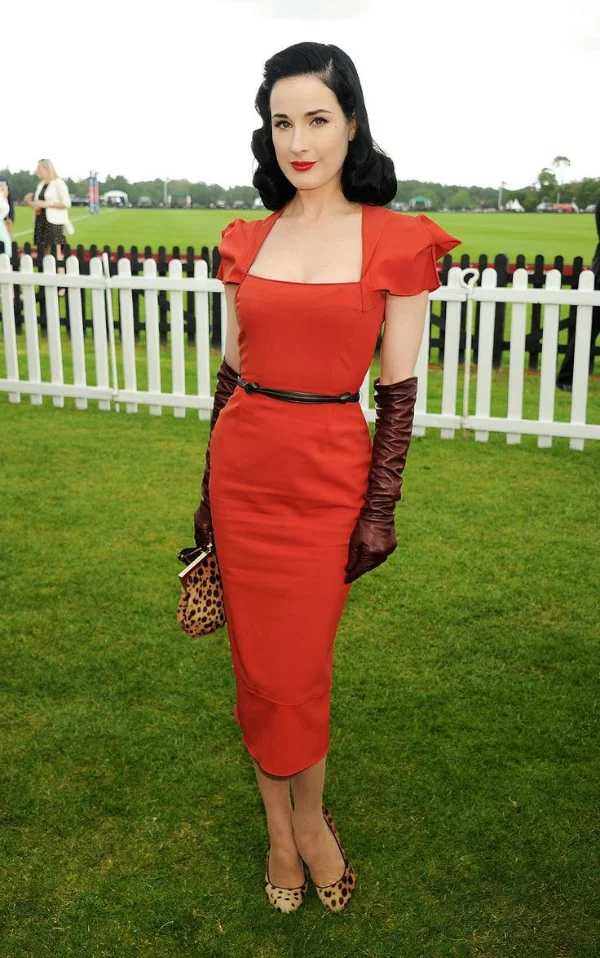
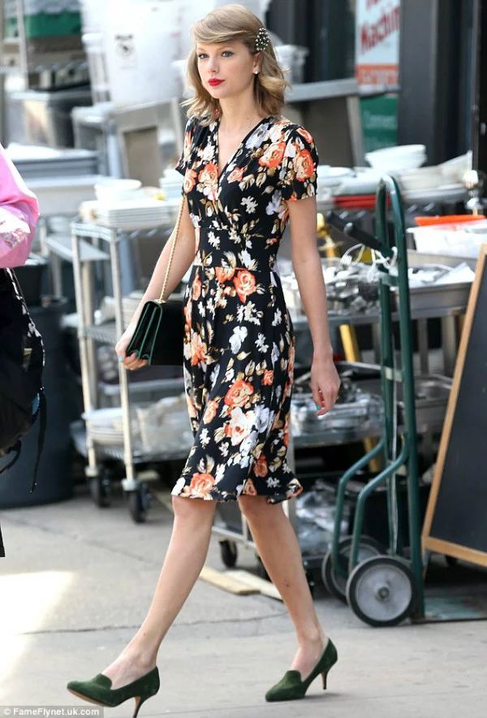
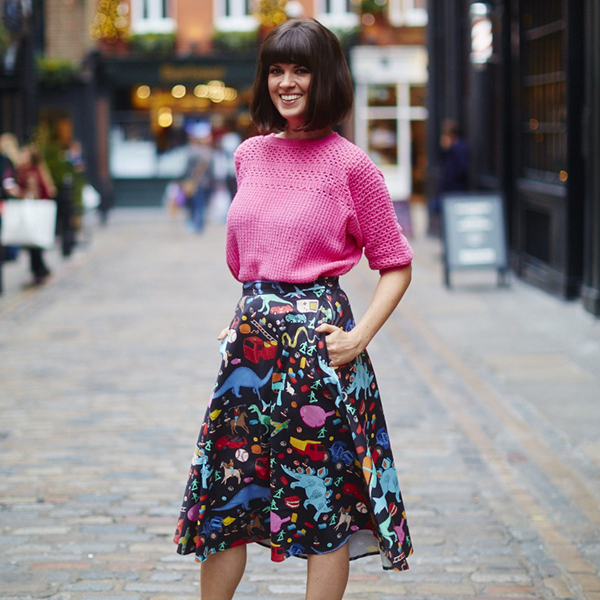

Congratulations! You've picked our Vintage wardrobe.
One of the most adorable fashion styles, it definitely is a blast from the past. From flapper dresses to pinup clothing and from retro swimwear to indie clothing, the vintage look is a culmination of fashion from the 20’s to the 70’s. It is the one trend that overcame the test of time


